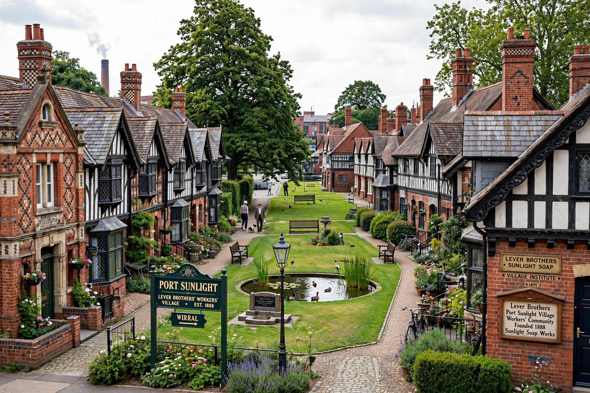

| Port Sunlight | |
|---|---|
| OS grid reference | SJ338838 |
| Unitary authority | Wirral |
| Ceremonial county | Merseyside |
| Region | North West |
| Country | England |
| Sovereign state | United Kingdom |
| Post town | Wirral |
| Postcode district | CH62 |
Port Sunlight is a model village and suburb in the Metropolitan Borough of Wirral, Merseyside, England. It is located between Lower Bebington and New Ferry, on the Wirral Peninsula. Port Sunlight was built by Lever Brothers to accommodate workers in its soap factory (now part of Unilever); work commenced in 1888. The name is derived from Lever Brothers' most popular brand of cleaning agent, Sunlight.

Port Sunlight contains 900 Grade II listed buildings, and was declared a conservation area in 1978. Port Sunlight has been informally suggested for World Heritage Site (WHS) status to protect it from development and to preserve the unique nature of the village.
In 1887, Lever Brothers began looking for a new site on which to expand its soap-making business, which was at that point based in Warrington. The company bought 56 acres (23 ha) of flat unused marshy land in Cheshire, south of the River Mersey. It was large enough to allow space for expansion, and had a prime location between the river and a railway line. The site was chosen because of its proximity to a water supply and raw materials. The village was built by William Lever (later Lord Leverhulme) to house the workers at the nearby Lever Brothers soap factory, which still produces detergents and other goods for Unilever.
Construction began in 1888, and the first cottages were occupied in 1889. By 1914 the population had risen to 4,000. The village hall opened in 1900, the Lady Lever Art Gallery in 1922, and other amenities included a hospital, schools, a concert hall, an open-air swimming pool, a church, and a temperance hotel. Lever introduced welfare schemes, and provided for the education and entertainment of his workforce, encouraging recreation and organisations which promoted art, literature, science or music.
Between 1899 and 1914, 800 houses were built to accommodate a population of 3,500. Some 30 architects contributed to the design of the houses, and each block was designed by a different architect. The village is notable for its variety of architectural styles, including Arts and Crafts, Jacobean, Queen Anne, Tudor Revival and Dutch gables. All of the houses were built in brick, stone, or half-timbered with timber framing, and decorative plasterwork is common.